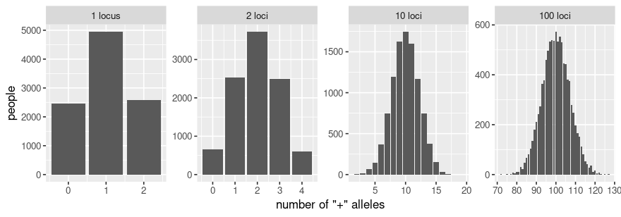
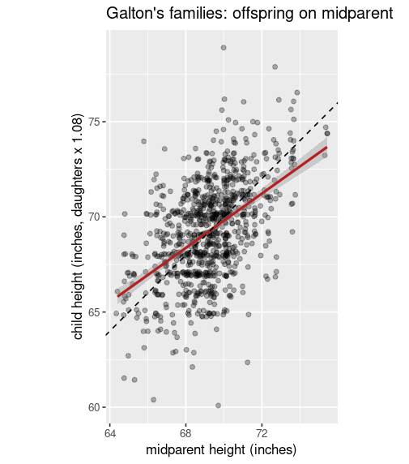
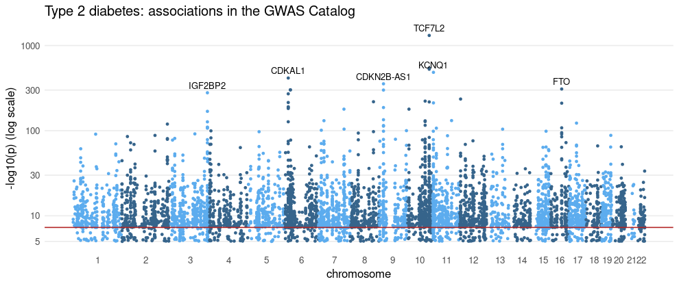

Exercise in R: complex traits, heritability & GWAS
Goal
By the end of this exercise you should be able to:
- simulate the polygenic model and see a normal distribution emerge;
- estimate heritability from Galton’s family data with
lm, and interpret the slope, its confidence interval and its limits; - build a Manhattan plot from scratch in ggplot2 from a table of GWAS associations: cumulative positions, alternating colours, a threshold line and labels.
Before you start
This page builds on the by-hand part of the Exercise, so do that first. You need the packages dplyr, readr and ggplot2. Download two files and save them in a data/ folder of your R project:
- galton_families.csv: Galton’s family heights in inches, one row per adult child (934 children, 205 families). From the R package HistData 1.1.1, data set
GaltonFamilies, which transcribes Galton’s own notebook.midparentHeightis (father + 1.08 × mother)/2. - gwas_catalog_t2d.csv: all associations for type 2 diabetes in the GWAS Catalog, downloaded with the REST API v2 on 20 November 2026 and reduced to one row per SNP (the smallest p-value).
neg_log10_pis −log10 of the p-value;posis the GRCh38 position.
Tasks
New this time: lm for heritability and a Manhattan plot built step by step. You know lm from your data-analysis course; here the slope has a genetic meaning. A Manhattan plot needs one trick: positions restart at 1 on every chromosome, so we compute a cumulative position by adding the length of all earlier chromosomes.
library(dplyr)
library(readr)
library(ggplot2)The polygenic model
R1. For 10 000 people, simulate the number of “+” alleles at 1, 2, 10 and 100 unlinked additive loci, each with allele frequency 0.5. rbinom(n, size = 2, prob = 0.5) gives the number of “+” alleles at one locus; put one locus per column in a matrix and add up each row with rowSums. Plot the distribution for each number of loci. How many classes do you see, and what shape appears?
set.seed(1)
n_people <- 10000
polygenic <- function(n_loci) {
# each locus: 2 alleles, each + with probability 0.5, so the genotype adds 0, 1 or 2
g <- matrix(rbinom(n_people * n_loci, size = 2, prob = 0.5), nrow = n_people)
rowSums(g) # number of "+" alleles per person
}
sims <- bind_rows(
tibble(loci = "1 locus", value = polygenic(1)),
tibble(loci = "2 loci", value = polygenic(2)),
tibble(loci = "10 loci", value = polygenic(10)),
tibble(loci = "100 loci", value = polygenic(100))
) |> mutate(loci = factor(loci, levels = c("1 locus", "2 loci", "10 loci", "100 loci")))
sims |> group_by(loci) |> summarise(classes = n_distinct(value), mean = mean(value), sd = sd(value))
ggplot(sims, aes(value)) + geom_bar() +
facet_wrap(~ loci, scales = "free", nrow = 1) +
labs(x = 'number of "+" alleles', y = "people")Galton’s families
R2. Read data/galton_families.csv. How many families and children are there? Compute the mean and SD of the children’s height for daughters and sons.
galton <- read_csv("data/galton_families.csv")
galton
galton |> summarise(families = n_distinct(family), children = n())
galton |> group_by(gender) |> summarise(n = n(), mean_height = mean(childHeight), sd = sd(childHeight))R3. Galton multiplied daughters’ heights by 1.08 to put them on the male scale. Do the same in a new column child_adj, and check that the means of sons and daughters now agree. Then fit lm(child_adj ~ midparentHeight). What is the slope, and its 95% confidence interval (confint)? What is your estimate of h²? Plot the data with the regression line and the line of slope 1.
galton <- galton |>
mutate(child_adj = ifelse(gender == "female", 1.08 * childHeight, childHeight))
galton |> group_by(gender) |> summarise(mean_adj = mean(child_adj))
fit <- lm(child_adj ~ midparentHeight, data = galton)
summary(fit)
coef(fit)
confint(fit)
ggplot(galton, aes(midparentHeight, child_adj)) +
geom_jitter(width = 0.15, height = 0.15, alpha = 0.3) +
geom_smooth(method = "lm", formula = y ~ x, colour = "firebrick") +
geom_abline(slope = 1, intercept = 0, linetype = "dashed") +
coord_equal() +
labs(x = "midparent height (inches)", y = "child height (inches, daughters x 1.08)",
title = "Galton's families: offspring on midparent")(geom_jitter moves each point a little at random, because Galton rounded heights and many points would otherwise lie on top of each other.)
R4. Regress the children on the father alone and on the mother alone. Which slopes do you expect if h² is what you found in R3? Convert the father slope to an estimate of h². Finally, compute the correlation between the heights of fathers and mothers: did tall men marry tall women (assortative mating)?
coef(lm(child_adj ~ father, data = galton))
coef(lm(child_adj ~ mother, data = galton))
2 * coef(lm(child_adj ~ father, data = galton))[2]
cor(galton$father, galton$mother)A Manhattan plot from the GWAS Catalog
R5. Read data/gwas_catalog_t2d.csv. How many SNPs and studies are in it? Show the eight strongest associations. How many SNPs are genome-wide significant (−log10 p ≥ −log10(5 × 10⁻⁸) = 7.3)?
t2d <- read_csv("data/gwas_catalog_t2d.csv")
nrow(t2d)
n_distinct(t2d$study)
t2d |> arrange(desc(neg_log10_p)) |> select(rsid, chr, pos, neg_log10_p, mapped_gene) |> head(8)
t2d |> filter(neg_log10_p >= -log10(5e-8)) |> nrow()R6. Build the Manhattan plot in four steps.
- For each chromosome, find its length (here: the largest position in the data) and an offset: the summed length of all earlier chromosomes, with
cumsum. left_jointhe offsets to the SNPs and computebp_cum = pos + offset.- Find the centre of each chromosome for the axis labels, and the strongest SNP of the six top genes (skip SNPs mapped to several genes) for text labels.
- Plot −log10 p against
bp_cum, colour alternate chromosomes withchr %% 2, add the 5 × 10⁻⁸ line, and use a log scale on y because the p-values span from 10⁻⁵ to 10⁻¹³¹⁵.
Which chromosomes have most associations?
chrom_len <- t2d |> group_by(chr) |> summarise(len = max(pos)) |>
mutate(offset = cumsum(as.numeric(len)) - len)
manh <- t2d |>
left_join(chrom_len, by = "chr") |>
mutate(bp_cum = pos + offset)
axis_pos <- manh |> group_by(chr) |> summarise(centre = (min(bp_cum) + max(bp_cum)) / 2)
top_genes <- manh |>
filter(!grepl(";", mapped_gene)) |>
group_by(mapped_gene) |> slice_max(neg_log10_p, n = 1, with_ties = FALSE) |>
ungroup() |> slice_max(neg_log10_p, n = 6)
top_genes |> select(mapped_gene, chr, neg_log10_p)
ggplot(manh, aes(bp_cum, neg_log10_p, colour = factor(chr %% 2))) +
geom_point(size = 0.8) +
geom_hline(yintercept = -log10(5e-8), colour = "firebrick") +
geom_text(data = top_genes, aes(label = mapped_gene), colour = "black", size = 3, vjust = -0.6) +
scale_colour_manual(values = c("steelblue4", "steelblue2"), guide = "none") +
scale_x_continuous(breaks = axis_pos$centre, labels = axis_pos$chr) +
scale_y_log10(breaks = c(5, 10, 30, 100, 300, 1000)) +
labs(x = "chromosome", y = "-log10(p) (log scale)",
title = "Type 2 diabetes: associations in the GWAS Catalog") +
theme_minimal() + theme(panel.grid.minor = element_blank(), panel.grid.major.x = element_blank())
t2d |> count(chr) |> arrange(desc(n)) |> head(5)Solutions
Run with Rscript --vanilla from the unit folder. Messages from loading packages and reading the CSV files are not shown.
R1.
# A tibble: 4 × 4
loci classes mean sd
<fct> <int> <dbl> <dbl>
1 1 locus 3 1.01 0.710
2 2 loci 5 1.99 1.00
3 10 loci 18 9.98 2.25
4 100 loci 51 100.0 7.09
One locus gives 3 classes in the ratio 1 : 2 : 1, two loci 5 classes (1 : 4 : 6 : 4 : 1). With 10 loci, 18 of the 21 possible classes appear (the extremes are too rare to show up in 10 000 people), and the shape is already a bell curve. With 100 loci, a smooth normal distribution: the binomial approaches the normal. The SD grows as √(k/2): 0.71, 1.0, 2.24, 7.07.
R2.
# A tibble: 934 × 8
family father mother midparentHeight children childNum gender childHeight
<chr> <dbl> <dbl> <dbl> <dbl> <dbl> <chr> <dbl>
1 001 78.5 67 75.4 4 1 male 73.2
2 001 78.5 67 75.4 4 2 female 69.2
3 001 78.5 67 75.4 4 3 female 69
4 001 78.5 67 75.4 4 4 female 69
5 002 75.5 66.5 73.7 4 1 male 73.5
6 002 75.5 66.5 73.7 4 2 male 72.5
7 002 75.5 66.5 73.7 4 3 female 65.5
8 002 75.5 66.5 73.7 4 4 female 65.5
9 003 75 64 72.1 2 1 male 71
10 003 75 64 72.1 2 2 female 68
# ℹ 924 more rows
# A tibble: 1 × 2
families children
<int> <int>
1 205 934
# A tibble: 2 × 4
gender n mean_height sd
<chr> <int> <dbl> <dbl>
1 female 453 64.1 2.36
2 male 481 69.2 2.62205 families, 934 adult children. Sons average 69.2 inches (176 cm) and daughters 64.1 inches (163 cm).
R3.
# A tibble: 2 × 2
gender mean_adj
<chr> <dbl>
1 female 69.2
2 male 69.2
Call:
lm(formula = child_adj ~ midparentHeight, data = galton)
Residuals:
Min 1Q Median 3Q Max
-9.4992 -1.4956 0.0939 1.5365 9.1303
Coefficients:
Estimate Std. Error t value Pr(>|t|)
(Intercept) 19.91751 2.82130 7.06 3.26e-12 ***
midparentHeight 0.71258 0.04075 17.49 < 2e-16 ***
---
Signif. codes: 0 ‘***’ 0.001 ‘**’ 0.01 ‘*’ 0.05 ‘.’ 0.1 ‘ ’ 1
Residual standard error: 2.244 on 932 degrees of freedom
Multiple R-squared: 0.247, Adjusted R-squared: 0.2462
F-statistic: 305.8 on 1 and 932 DF, p-value: < 2.2e-16
(Intercept) midparentHeight
19.917513 0.712585
2.5 % 97.5 %
(Intercept) 14.3806836 25.4543419
midparentHeight 0.6326079 0.7925621
After the × 1.08 adjustment, sons and daughters both average 69.2 inches. The slope is 0.71 (95% CI 0.63 to 0.79), so h² ≈ 0.71. Three caveats make this an imperfect estimate: (1) families share environment (food, wealth), which inflates the slope; (2) siblings in the same family are not independent observations, so lm underestimates the SE and the CI is too narrow; (3) Galton’s heights are rounded and partly reported, not measured. R² = 0.25 is not h²: R² is the fraction of the children’s variance explained by the midparent, which also depends on how variable the midparents are.
R4.
(Intercept) father
39.684187 0.427027
(Intercept) mother
46.49690 0.35476
father
0.854054
[1] 0.06036612With h² ≈ 0.71, each single-parent slope should be about 0.36. The mother slope is 0.35, as expected. The father slope is 0.43, giving h² = 2 × 0.43 = 0.85, higher than the midparent estimate. (In Galton’s data the father’s height may be measured more accurately, or the 1.08 factor may not fit the mothers well; single-parent estimates are also noisier.) The correlation between the heights of fathers and mothers is only 0.06: almost no assortative mating for height in these families.
R5.
[1] 5230
[1] 192
# A tibble: 8 × 5
rsid chr pos neg_log10_p mapped_gene
<chr> <dbl> <dbl> <dbl> <chr>
1 rs7903146 10 112998590 1315. TCF7L2
2 rs35011184 10 112989975 543. TCF7L2
3 rs34872471 10 112994312 528. TCF7L2
4 rs2237897 11 2837316 485. KCNQ1
5 rs7766070 6 20686342 416. CDKAL1
6 rs10811661 9 22134095 355. CDKN2B-AS1
7 rs1558902 16 53769662 309. FTO
8 rs13214872 6 31287231 302. RPL3P2;WASF5P
[1] 45365 230 SNPs from 192 studies (in this reduced file). The top three SNPs are all in TCF7L2, close together on chromosome 10: one locus, several SNPs in LD (a tower). 4 536 of the 5 230 SNPs are genome-wide significant; the rest were reported at the suggestive level (the Catalog includes associations with p < 10⁻⁵).
R6.
# A tibble: 6 × 3
mapped_gene chr neg_log10_p
<chr> <dbl> <dbl>
1 TCF7L2 10 1315.
2 KCNQ1 11 485.
3 CDKAL1 6 416.
4 CDKN2B-AS1 9 355.
5 FTO 16 309.
6 IGF2BP2 3 279.
# A tibble: 5 × 2
chr n
<dbl> <int>
1 6 413
2 3 407
3 2 379
4 10 358
5 7 356
TCF7L2 towers above everything else, followed by KCNQ1, CDKAL1, CDKN2B-AS1, FTO and IGF2BP2. Associations are spread over every autosome: type 2 diabetes is highly polygenic. Large chromosomes tend to have more hits (6, 3 and 2 lead, and 10 is high because of the many SNPs around TCF7L2), as expected if risk loci are scattered through the genome. Counting SNPs is not the same as counting loci: one locus can contribute dozens of SNPs in LD. Unlike a plot of a single GWAS, this one has no grey “skyline” of null SNPs at the bottom: the Catalog keeps only the reported associations.
Where this leads
The same code makes a Manhattan plot from the full summary statistics of any GWAS, which many studies publish (the GWAS Catalog links to them). From there, the next steps are fine-mapping, polygenic scores, and the ethics module’s discussion of what such scores should and should not be used for.